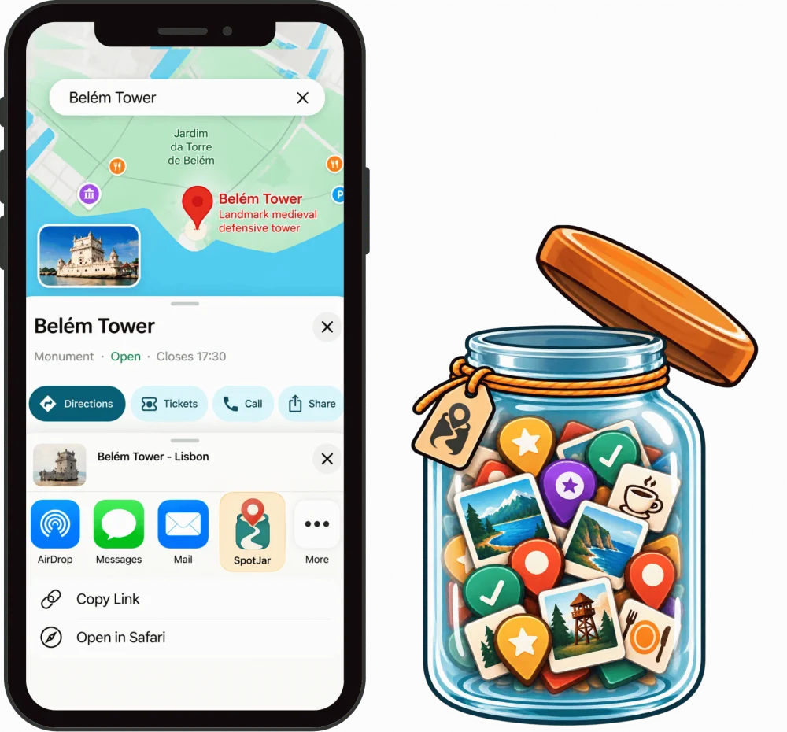
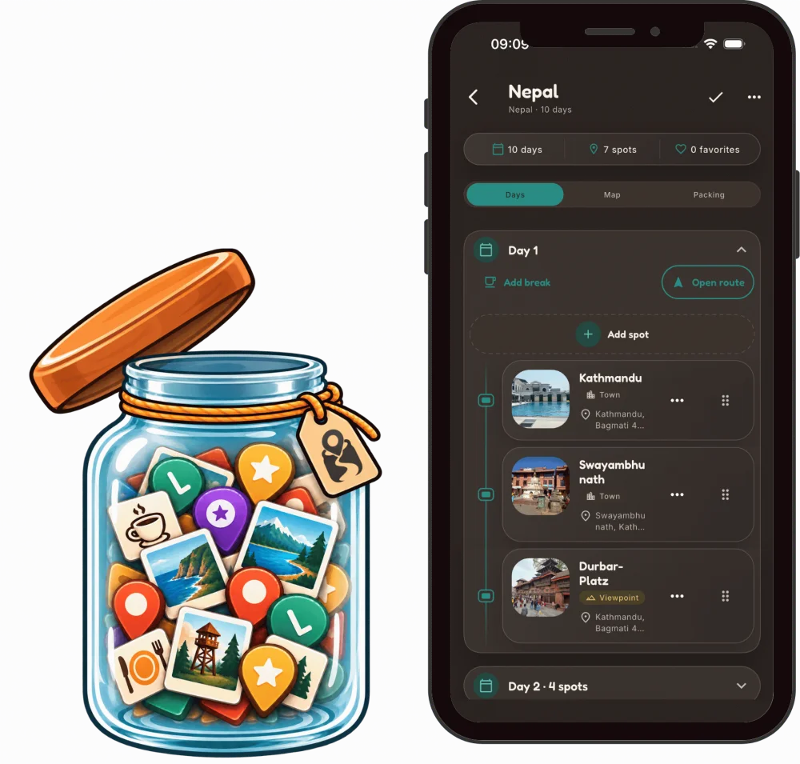
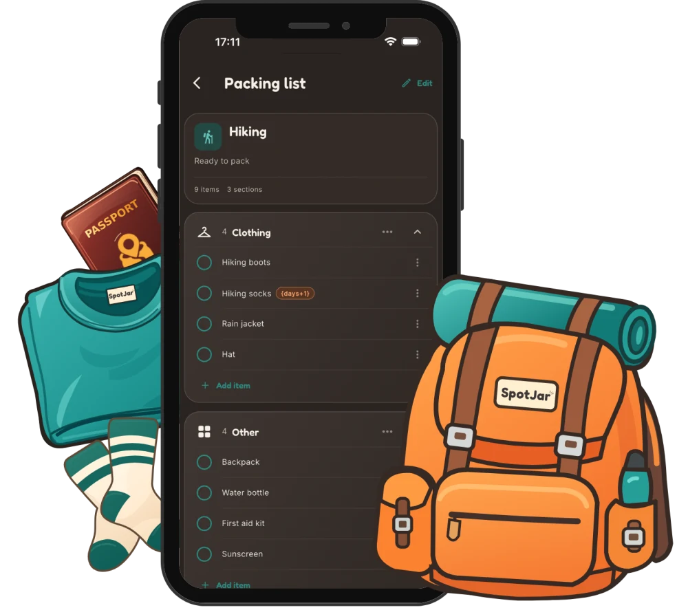
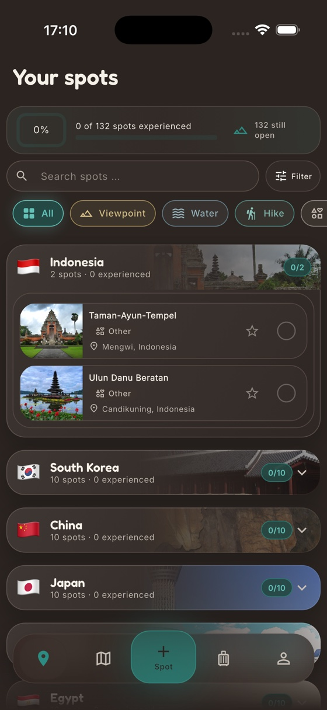
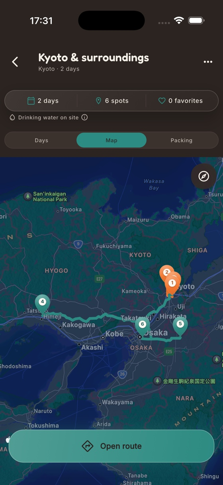
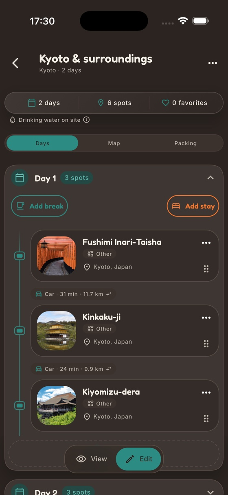

Orte speichern.
Reisen planen.
SpotJar sammelt Cafés, Aussichtspunkte und Wanderungen aus Google Maps oder Apple Karten in einer Liste, damit du später daraus eine Reise bauen kannst.
Zum Start ist kein Konto nötig.

Vom ersten Tipp bis zum letzten Reisetag.
- 01
Speichern
Teile einen Ort aus Google Maps oder Apple Karten mit SpotJar.
- 02
Planen
Sortiere gespeicherte Orte auf Reisetage.
- 03
Packen
Prüfe deine Packliste und öffne die Route in Maps.

Maps → SpotJarOrte in einer Liste statt in Chats und Screenshots.
Teile einen Ort in Google Maps oder Apple Karten über das Teilen-Menü mit SpotJar. Name, Adresse und Foto werden automatisch ergänzt.
Notizen und Kategorien
Ergänze Notizen und Kategorien, vom Lieblingscafé bis zur nächsten Wanderung.
Suche und Filter
Behalte mit Suche, Filtern und farbigen Pins den Überblick.

Sortiere deine gespeicherten Orte in Reisetage.
Wähle Orte aus deiner Liste und verteile sie Tag für Tag.
Nach Tagen planen
Verteile Orte auf die Reisetage und behalte alle Stopps im Blick.
Gemeinsam planen
Lade deine Reisebegleitung ein und plant eure Tage gemeinsam.
In Maps öffnen
Öffne die fertige Route in Google Maps oder Apple Karten.
Eine Packliste für jede Reise
Deine Packliste zeigt, was schon im Rucksack ist und was noch fehlt.

In der App
Orte
Nach Ländern gruppiert, mit Suche und Kategoriefiltern.

Karte
Reisekarte von Kyoto mit nummerierten Stopps.

Reisen
Orte nach Reisetagen sortiert.
